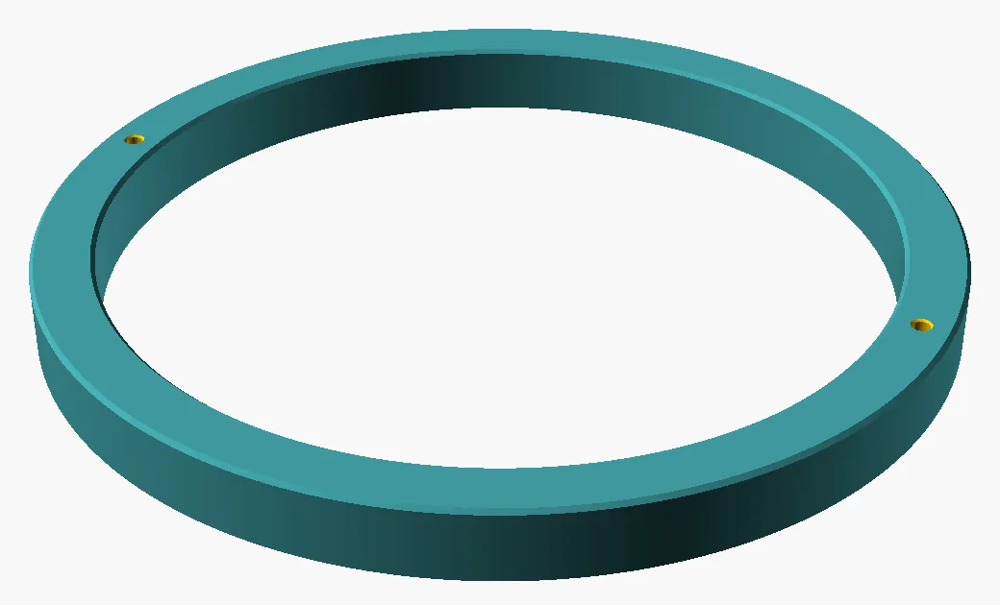
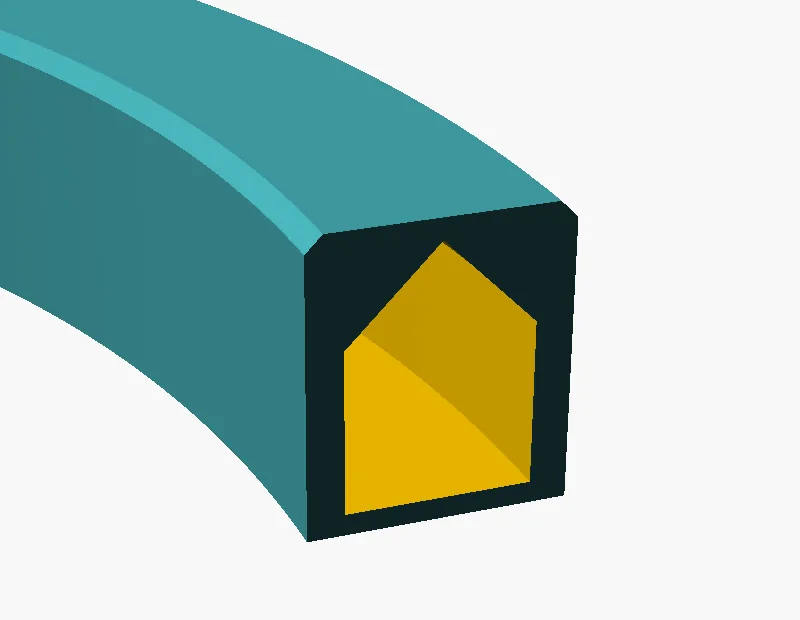
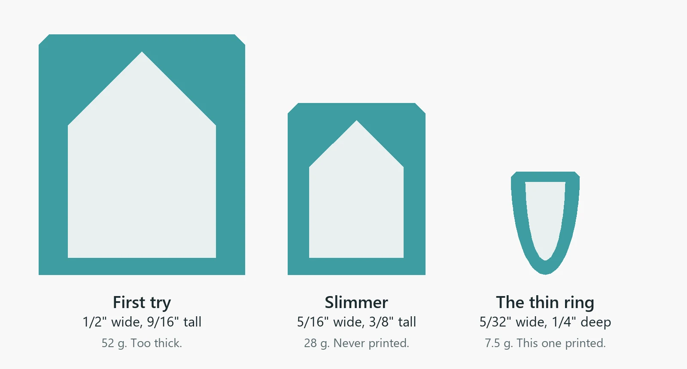
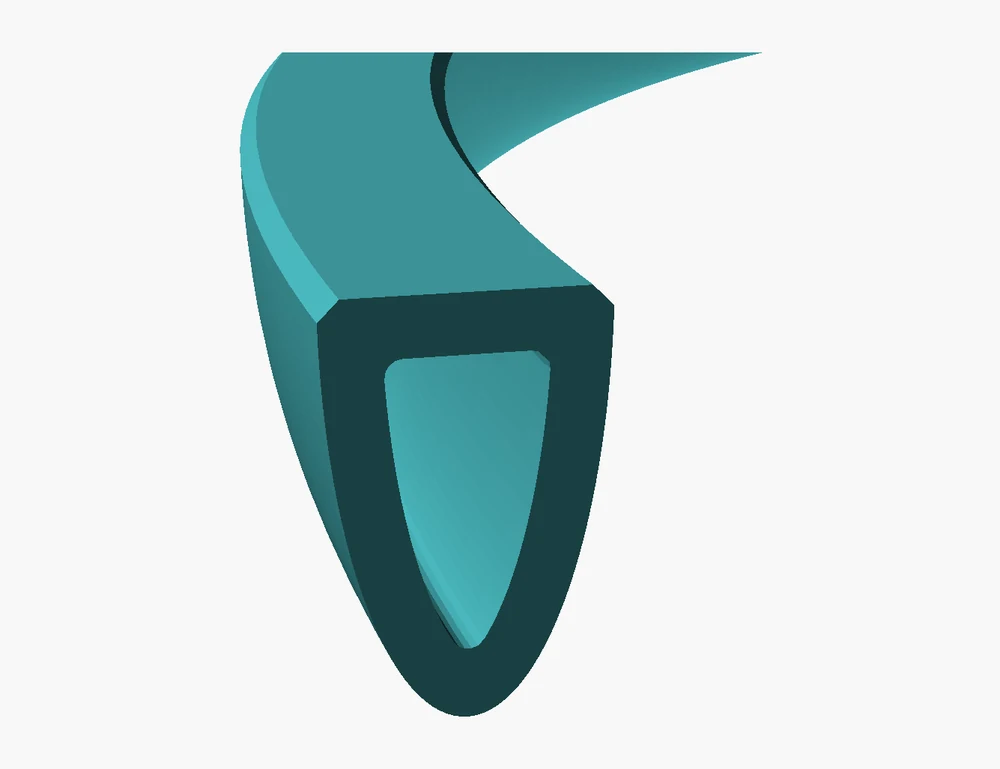
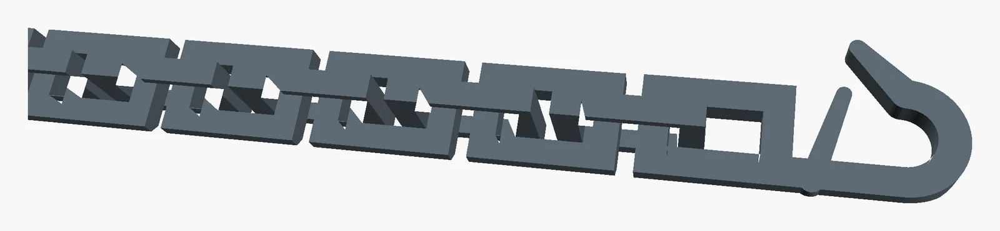
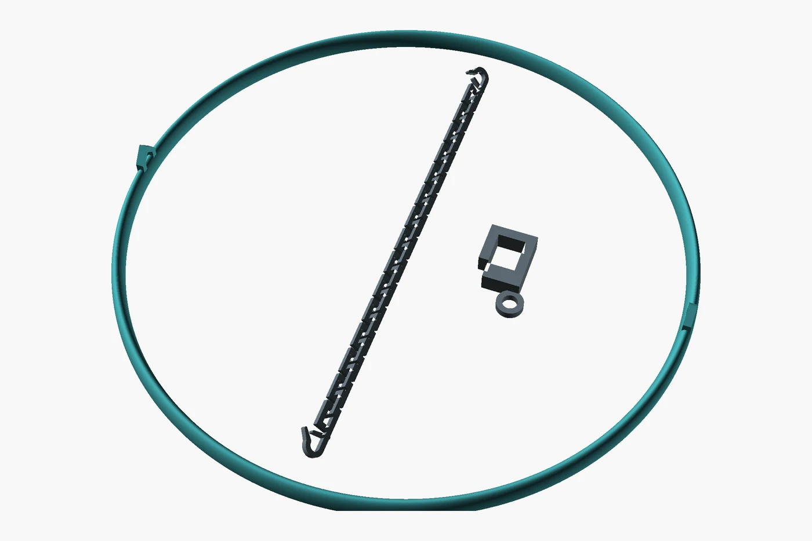

Project three · Printed
The floating ring
Red root floaters are small floating plants, and they go wherever the filter's current sends them, which is mostly into the filter. A floating ring keeps them in one patch of open water. Mine took three tries to get thin enough, and then it needed a chain.

Making plastic floatThree tries at thinThe chainOne plateFiles
Making plastic float
My first question was whether this was even the right plastic, because PETG sinks. It's denser than water (1.27 g/cm³), and so is PLA. The one common filament that floats, polypropylene, won't stick to my printer's plate without special tape.
So the ring floats on air instead. It's hollow, and the hollow is sealed all the way round. Thin walls split it into eight chambers, so one leak can't sink it. It would just sit a little lower on that side.
7 November
Three tries at thin
I asked for a ring as big as the printer's bed allows, and the first design was exactly that: 6 15/16 inches across, half an inch wide and 9/16 inch tall. On paper it floated well.


Then I asked for three sizes nested on one plate, and they started to print. They were super thick. This is a thing a screen doesn't tell you: half an inch of plastic around a few delicate plants is a lot of plastic. I stopped the print.
A slimmer box shape came next and never made it to the printer, because by then I knew what I wanted: a flat top like a thin float, a rounded bottom, and a border as thin as it could possibly be. Then I asked for even thinner.

The one that printed is 5/32 inch wide from above and ¼ inch deep, with walls just two passes of the nozzle thick. It prints upside down, flat top on the plate, in 27 minutes, and weighs 7.5 g.
There turned out to be a hard limit on thin. The walls can't get any thinner, so a narrower ring needs a deeper keel to hold enough air. At 5/32 inch it has lift to spare: pushed right under, it displaces about 10 g of water against its own 7.5 g, so it comes back up. A little narrower and that margin is nearly gone. Narrower still, and the walls weigh more than the air inside can carry.

A chain, printed already linked
Left alone, the ring wanders. It first had two small holes for fishing line, but I wanted a printed chain, and a printed chain can't thread a hole that small. So the holes became eyes: a pointed arch under the front and the back of the ring, where they hang out of sight below the waterline.
The chain is 27 links and about 6 inches long, and it comes off the plate already linked. Each link is a square loop tipped at 45 degrees, leaning the opposite way to its neighbours, so every surface is either a slope the printer can climb or a very short bridge. A clip sits on the edge of the tank, using the same 8.4 mm slot as everything else here, and the chain runs from the ring to the clip.

The first hooks were plain J shapes, and they slipped off too easily. Now each one has a springy gate, like a tiny carabiner. The gap is a little narrower than the bar it clips onto, so it takes a small push to snap on and another to get off.
One plate, 41 minutes

Files
| File | What it is | Print time | Plastic |
|---|---|---|---|
| floater_ring.scad | Every ring, as OpenSCAD code. part picks d_large (the thin ring), d_medium, d_small, d_cut, or the older box rings | ||
| tether.scad | The chain, its hooks and the glass clip | ||
| float_calc.py | Works out the weight and the float line from an STL | ||
| ring_tether_petg.gcode.3mf | The thin ring, the chain and the clip on one plate | 41 m | 10 g |
| ring_thin_large_petg.gcode.3mf | The thin ring alone | 27 m | 8 g |
| chain_snap_hooks_petg.gcode.3mf | The chain alone, a snap hook at each end | 16 m | 1.5 g |
| chain_one_hook_petg.gcode.3mf | A chain with a hook at one end only | 16 m | 1.4 g |
| floater_ring_d_large.stl | STLs for the ring, the chain and the clip are in this folder | ||
| floater_ring_petg.gcode.3mf | The first try: ½″ wide, never printed on its own | 2 h 10 m | 52 g |
| rings_3_nested_petg.gcode.3mf | Three thick rings nested on one plate: the print I stopped | 4 h 48 m | 115 g |
| ring_large_slim_petg.gcode.3mf | The slimmer box ring, never printed (a medium one is beside it) | 1 h 18 m | 28 g |
The .gcode.3mf files are sliced for a Bambu Lab A1 mini with a 0.4 mm nozzle and the textured PEI plate, and they play no start or finish tune. For any other printer, slice the STL yourself. Sizes on these pages are in inches; the models themselves are in millimetres.
Every picture on this page is a render made from the model files. Photos of the printed parts on the real tank are on their way.